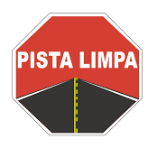

Follow @pista_limpa
PISTA LIMPA
Trânsito nas principais vias de Santa Catarina
Participe no Twitter
#pista_limpa @pista_limpa
contato@pistalimpa.com.br
PRóQUIMICA
- Apoio a Emergências com produtos perigosos
G.M.S.J
- Boletim de Ocorrência de Acidente de Trânsito Em São José
P.R.F
- Declaração de Acidente de Trânsito em Rodovias Federais
Florianópolis
- Câmeras ao Vivo
G.M.F
- Guarda Municipal de Florianópolis
Trânsito
Boletim de Ocorrência de Acidente de Trânsito Em São José
Declaração de Acidente de Trânsito em Rodovias Federais
Acidentes Motocicletas
Auto Pista Litoral Sul
DETRAN SC
Emergência
190 – Policial Militar
191 – Policia Rodoviária Federal
192 – SAMU
193 – Bombeiros
199 – Defesa Civil
153 – Guarda Municipal
0800 725 1771 – Auto Pista Litoral Sul
0800 11 8270 – Pró-Quimica Abiquim
Notícias
ND_Online
G1
R7
IG
Folha
Participe no Twitter
#pista_limpa @pista_limpa
contato@pistalimpa.com.br
PRóQUIMICA - Apoio a Emergências com produtos perigosos